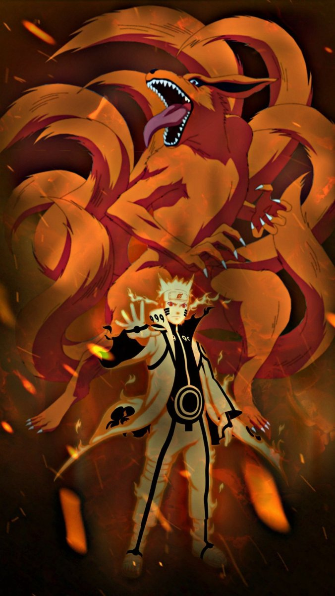
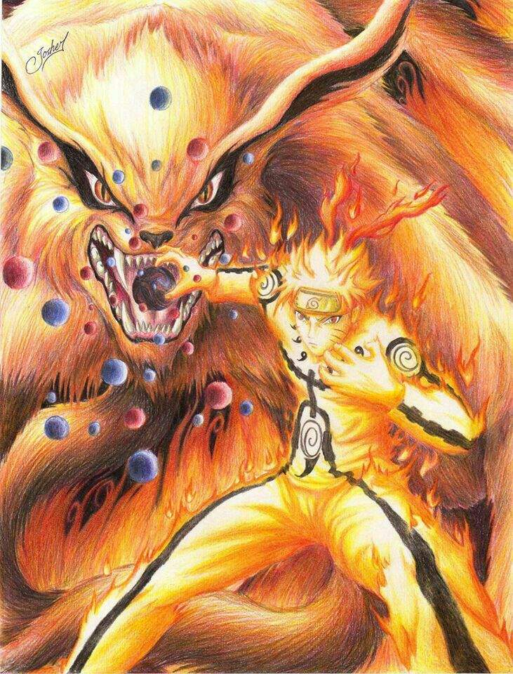
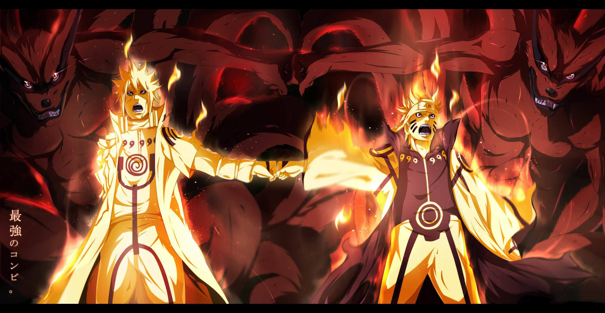
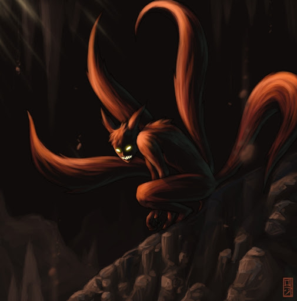

Появление Курамы
 Девятихвостый (яп. 九尾, Кьюби) —
один из девяти хвостатых зверей. В начале истории Кураму показали, как яростное и
злобное чудовище, стремящиеся всё уничтожить. После запечатывания, в Наруто Узумаки, лис пытается посеять
ненависть в сердце мальчика, однако добродушный и настойчивый джинчурики, меняет его мировоззрение и использует
силу лиса во имя спасения мира.
Курама — кицунэ с красно-оранженой шерстью, человеческими руками и девятью
длинными хвостами. Внутри ушей и вокруг глаз у него черная шерсть. Радужки глаз красные, а зрачки черные.В
последние дни Хагоромо Ооцуцуки Курама был гораздо меньшим в размерах, но все равно превосходил своего творца.
Внешне он казался мягче, форма лица сперва не была заостренной на манер лисицы.[6] Со временем Курама
значительно
вырос, став в размерах примерно как Скала Хокаге. Глава Горы Мьёбоку - огромная жаба Гамабунта, был размером
лишь
с половину туловища Девятихвостого. Один зрачок Курамы больше человека в полный рост. [7] Когда Минато разделил
Кураму на две части, в размерах они стали в два раза меньше, чем когда были единым целым,[8] но все равно
смотрелись наравне с остальными хвостатыми.[9] Ян-Курама сохранил свой первичный окрас, а Инь-Курама стал более
темным.
В своем Режиме Чакры лис приобретает золотистый цвет, усы становятся гуще, черные круглые отметины появляются на
плечах, животе, лапах. Черные линии образуются по всей длине позвоночника, на лапах и хвостах.[12] Пока Наруто
находится в Режиме Мудреца, у Курамы тоже проявляются схожие темные пятна вокруг глаз.[13] Когда Наруто получил
чакру Шести Путей, Курама в Режиме Хвостатого Зверя увеличился, приобретя такие же размеры, как Завершенное
Сусаноо Саске,[14] также получившего чакру Мудреца. После того, как обе половины Курамы были запечатаны в
Наруто,
лис восстановился до своих первоначальных размеров, возвышаясь даже над пнем Древа-Бога
Нрав Курамы к людям
Курама — циничная и проницательная личность, обладающая несколько извращенным чувством юмора. При обращении к себе он использует "ваши" яп. ワシ, что в японском диалекте обычно употребляется пожилыми мужчинами. Курама гордец, считает себя самым сильным из хвостатых зверей на том основании, что у него хвостов больше. Из-за таких взглядов остальные звери порицают его, особенно недоволен им Шукаку.[15] Но заносчивость Курамы имеет свои границы, он открыто признал, что в одиночку у него нет никаких шансов перед Десятихвостым,[16] и по горькому опыту с Мадарой прекрасно понимал, что он не из тех противников, которых можно недооценивать даже несмотря на временное преимущество.[17] Он также ревниво реагирует, когда Наруто использует не его силу. [18] Было также показано, что Кураме очень небезразличен Хагоромо Ооцуцуки. Когда Мудрец Шести Путей передал хвостатым свои последние наставления, Девятихвостый не сдержался и начал плакать.[6] Манера речи Курамы часто бывает резкой, но в глубине души он благосклонен, поскольку лис действительно выражает беспокойство по поводу своих товарищей [19] и даже подбадривает Каваки несколькими фразами.
Столетия негативного отношения человечества к нему выработали в Кураме крепкую враждебность и недоверие к людям. Даже до того, что он провозгласил себя живым воплощением ненависти.[21] С тех пор, как его запечатали в Наруто, Курама планировал использовать зависимость мальчишки от его силы и вырваться из печати. В конце-концов, не без труда, Наруто удалось улучшить взаимодействие с лисом,[22] и даже более, он пообещал избавить Кураму от ненависти в его душе.[23] Курама громко упрекнул Наруто за подобные заявления, но в то же время он зауважал Наруто за его решимость, и все-таки признал, что юноша отличается от людей, с которыми он ранее сталкивался. Тогда в их отношениях произошел коренной перелом, существенно изменивший натуру лиса. В результате Девятихвостый позволил Наруто использовать свою силу на всю в Четвертой Мировой Войне Шиноби. Вскоре, когда Наруто сказал Сон Гоку о своем желании спасти хвостатых и подружиться с Курамой,[24] лис, являющийся свидетелем всех проблем и усилий Наруто в его нелегком жизненном пути, ответил ясно — если Наруто действительно хочет добиться этого, ему придется доказать это делом.[25] Когда же Наруто успешно освободил Сон Гоку от контроля Обито, Курама, наконец, убедился в правдивости намерений Наруто и предложил свою чакру для помощи ему. Наруто затем снял печать и радостно признал лиса полноправным его товарищем по команде и членом деревни Коноха.
Джинчурики Курамы
За короткий промежуток времени эти двое прониклись доверием друг к другу. До такой степени, что Наруто позволил Кураме полностью взять контроль над его телом, не беспокоясь, а Девятихвостый в свою очередь без колебаний после вернул контроль обратно.[27] Курама признал, что верит в Наруто и в то, что он победит Обито и продолжит оберегать оставленное ему наследие Минато и Джирайи, тем самым признавая, что больше зла на Минато не держит.[28] С тех пор Курама стал проявлять больше заботы о своих товарищах, дважды спасая Киллера Би и Гьюки, и даже опасаясь того, что Наруто управляет крайне большим уровнем чакры.
Показал он себя и с комической стороны,[29] когда поддался на споры Наруто об упрямстве, подколол своего джинчуурики насчет его поцелуя с Саске, а после даже поприветствовал на Наруто, когда хвостатые были освобождены из Кагуи.[30] В аниме Курама стал бояться Химавари после того, как был вырублен атакой Мягкого Кулака, использованной ею во время инцидента, когда Наруто был вынужден защитить Боруто от Химавари, которая напала на него в гневе из-за то, что он порвал ее плюшевую фигуру. [31] В результате между Курамой и Наруто образовалась надежная дружеская связь; даже после того, как он пробыл некоторое время полностью свободным, лис не переча согласился с просьбой Хагоромо вернуться назад к Наруто, продемонстрировав, что он действительно стал похожим на него, хотя другим признаться в этом он наотрез отказался. Кроме того, благодаря его подвигам во время Четвертой Мировой Войны Шиноби и работе вместе с Наруто мирное существование Курамы признали Пять Великих Стран Шиноби, поскольку он мог напрямую разговаривать с другими Каге и помогать в важных вопросах
Со временем он стал заботиться о семье Наруто, находя их забавными, когда они все вместе. [33] Его забота о Наруто также проявилась, когда он использовал Режим Бариона, предупредив его, чтоэта сила может убить Хокаге, и проинструктировал Наруто о том, как лучше всего ее использовать. [34] Однако позже выяснилось, что реальной ценой использования этого режима была жизнь лиса. Курама знал, что Наруто будет против жертвования кем-либо, даже если они зашли так далеко, и поэтому он перехетрил Хокаге, чтобы Наруто согласился.
Воспоминание Курамы
Курама, как и остальные хвостатые звери, появился на свет в последние дни Хагоромо Ооцуцуки. Мудрец Шести Путей использовал Технику Сотворения Всего Сущего, разделив чакру Десятихвостого на девять отдельных тел и дал каждому имя. Вскоре после создания Мудрец объяснил маленьким хвостатым, что, несмотря на то, что они разделены, между ними есть определенная связь. Кроме того, он предрек, что наступит день, когда они снова объединятся вместе, хотя не так как прежде, и тогда появится кто-то, кто покажет им, что такое истинная сила.[6][36] В аниме, незадолго до своей смерти, Хагоромо отправил Кураму жить в храм, построенный для защиты лесного региона с горами, который столетиями позже станет частью Страны Огня.[37] Со временем Курама заработал репутацию зловещего демона, природного бедствия, которое появляется из неоткуда и несет за собой убийства и разрушения в местах, где копится человеческая злоба в наихудших её проявлениях.
В период становления скрытых деревень шиноби, Золотой и Серебряный Братья из Кумогакуре были одними из тех, кто желал захватить Кураму на благо своей деревни, однако их попытки оказались тщетны и лис проглотил обоих. Но, братья не погибли. В течение двух недель они питались желудком Девятихвостого, получив часть его чакры, и в итоге вынудили Кураму выплюнуть их.
Когда Мадара Учиха решил покинуть Коноху, он напал на Девятихвостого и подчинил зверя своим Шаринганом, дабы использовать в битве против Хаширамы Сенджу, Первого Хокаге, будучи уверенным, что с такой силой он сможет одержать верх и отомстить. В ходе битвы Мадара облачил Кураму в свое Сусаноо, повысив наступательный и оборонительный потенциал хвостатого.[43] При всем том, Хашираме оказалось под силу устранить покров Сусаноо и лишить Мадару контроля над лисом.[44] После окончания баталии, Мито Узумаки жена Хаширамы запечатала лиса в себе и стала его первым джинчурики. Подробное описание здесь...
Половинка Курамы воссоединение!
По мере реализации их стратегии, Инь-Курама, находящийся внутри Минато, отметил, что действия и слова Наруто о его отце оказали влияние на его вторую половину. Инь-Курама также сказал Минато не обращать внимания на слова Обито, обвиняющего своего бывшего учителя во всем, уверяя, что он не виновен во всех развернувшихся трагедиях, и добавил, что не стоит взвешивать все на плечи своего сына, а наоборот, нужно помочь. Вскоре, когда Наруто и Минато столкнулись кулаками, Инь и Ян-Курама вступили в контакт друг с другом. Ян-Курама поприветствовал свою вторую половину и попросил его поделиться чакрой, чем ввел Инь-Кураму в небольшое замешательство. Тем не менее, они, подобно Наруто и Минато, объединили силы, параллельно обсуждая дуэт отца и сына. Инь-Курама сказал, что Наруто, должно быть, воспитали по-особенному, раз он относится к хвостатым как к друзьям.
Перед тем, как Наруто устремился в атаку на Обито, ставшего джинчурики Десятихвостого, Ян-Курама сказал ему о том, что сработать могут только атаки, основанные на сендзюцу. Вспоминая, как во время вторжения Пейна в Коноху Наруто совмещал два режима, и злил Кураму тем, что предпочитал его силе Режим Мудреца, теперь лис беспрекословно позволил Наруто войти в Режим Мудреца и пользоваться его силой. Инь-Курама посоветовал Минато сделать тоже самое. Минато и Наруто в Режимах Хвостатого Зверя создали невероятный гигантский, улучшенный сендзюцу, Расенган, и были телепортированы Тобирамой к местонахождению Обито. Однако, Учиха предугадал это и с легкостью отразил атаку. Они поняли, что сначала нужно уничтожить Шары Поиска Истины, которыми контролировал Обито. Наруто и Минато создали усиленный сендзюцу Шар Хвостатого Зверя, но Обито создал полноценную копию Десятихвостого в форме древа, корни которого начали преследовать Союзные Силы Шиноби и уничтожать всех, до кого доставали. Это ударило по боевому духу шиноби, но Наруто, через телепатию Ино Яманаки, передал всем свои воспоминания и чувства, вернув им решимость.
После того, как Инь-Курама передал большую часть своей чакры в свою Ян-половину, Наруто присоединился к Саске в бою против Обито. С усиленным сендзюцу Шаром Хвостатого Зверя, и усиленной сендзюцу стрелой Сусаноо, им удалось разрушить один из Шаров Поиска Истины. Битва продолжалась, в результате чего Саске и Наруто были выбиты из Сусаноо и Режима Хвостатого Зверя. Но, они собрались с силами и Саске использовал свое Завершенное Сусаноо, покрыв ним Режим Хвостатого Зверя Наруто. С помощью телепатической связи Наруто обратился к своим товарищам, попросив их прыгнуть на хвосты Курамы. Используя Расенганы созданные Наруто, все они пошли в наступление и пробили щит, позволив Наруто и Саске нанести решающий удар такой силы, что из Обито вышла чакра хвостатых. Благодаря совместным усилиям Союзных Сил Шиноби, все запечатанные звери были извлечены из тела Обито, а Десятихвостый превратился в пустую оболочку. Пока Наруто и Альянс отправились на помощь Хашираме, сражающегося с Мадарой, Инь-Курама объяснил Минато, стремящегося вылечить Обито, что Учихе не грозит смерть из-за извлечения, ибо Демоническая Статуя наполнена достаточным количеством жизненной энергии для поддержания жизни джинчуурики, но Обито на время обездвижен
В это время Наруто и Ян-Курама вновь вошли в Режим Хвостатого Зверя, присоединившись к другим хвостатым для противодействия Мадаре. Учиха, несмотря на все разрушительные атаки зверей, остался невредимым и отступил на безопасное расстояние. В итоге Мадара получил свой правый Риннеган от клона Белого Зецу и призвал Демоническую Статую из тела Обито, начав захватывать хвостатых обратно. Выпущенные цепи также окутали Ян-Кураму и Гьюки, начав вытягивать их из джинчурики. Наруто не удалось выйти из Режима Хвостатого Зверя, а потому, дабы спасти юношу от смерти, Ян-Курама, прежде чем был запечатанным в статую, связался с Гаарой чтобы попросить его передать Наруто Инь-Кураму из Минато.
Но в это время Чёрный Зецу преградил путь между Наруто и Минато, передающему своему сыну Инь-Кураму. В итоге Зецу стал джинчурики Инь-Курамы. К ним явился Мадара, ставший джинчурики Десятихвостого, и Зецу попытался передать своему повелителю его левый глаз с Риннеганом и Инь-Кураму, однако Обито не позволил этому произойти, помешав Зецу. Решив оказать помощь Союзным Силам для победы над Мадарой, Обито с Какаши телепортировали Наруто, находящегося на грани смерти, в измерение Камуи, а после Обито начал передавать ему Инь-Кураму.
Курама и чакра других хвостатых появились в подсознании Наруто во время разговора Узумаки с духом Хагоромо Ооцуцуки. Они показали неизменную веру в Мудреца и веру в то, что Наруто — ребёнок из пророчества. По возвращению Наруто на поле боя, Мадаре все же удалось восстановить оба глаза. Следом он выполнил Чибаку Тенсей, атаковав ими противников, а сам приготовился к активации Бесконечного Цукуёми. Инь-Курама передал Наруто чакру, которую он использовал для создания Расенсюрикена Шара Хвостатого Зверя против спутников Чибаку Тенсей